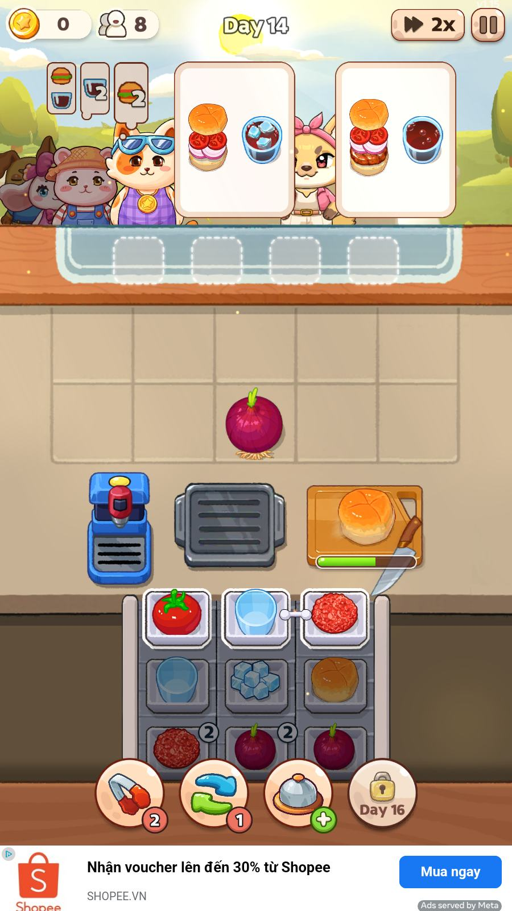
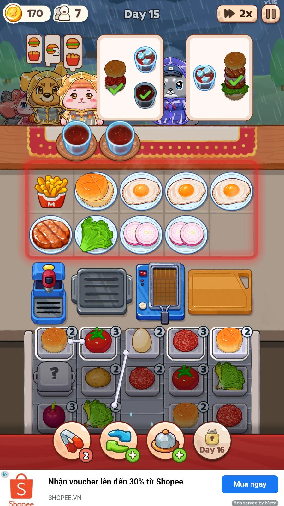
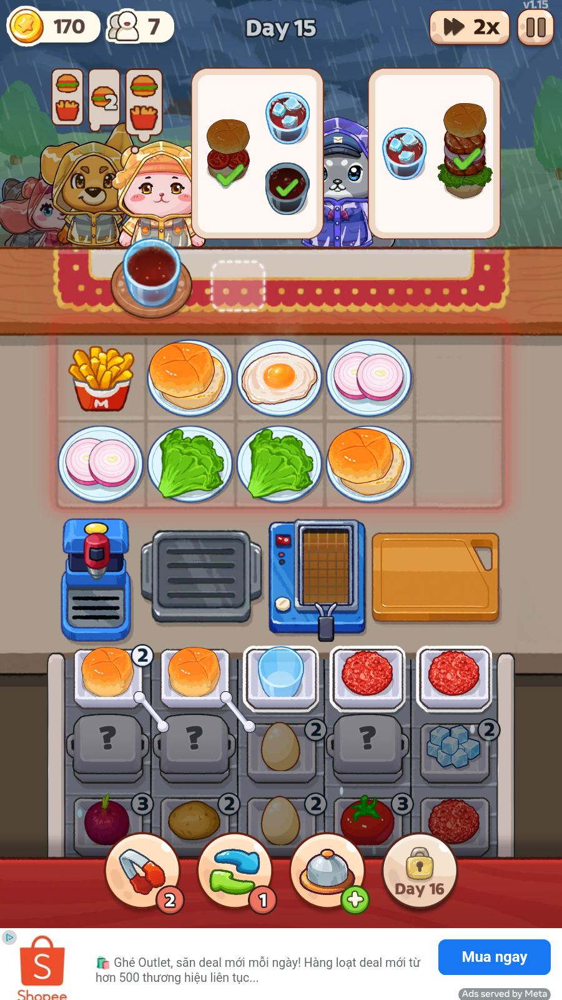
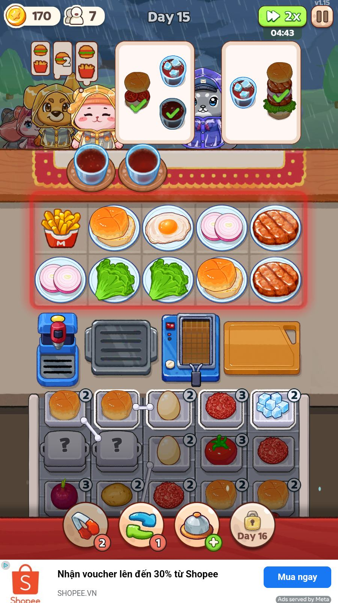
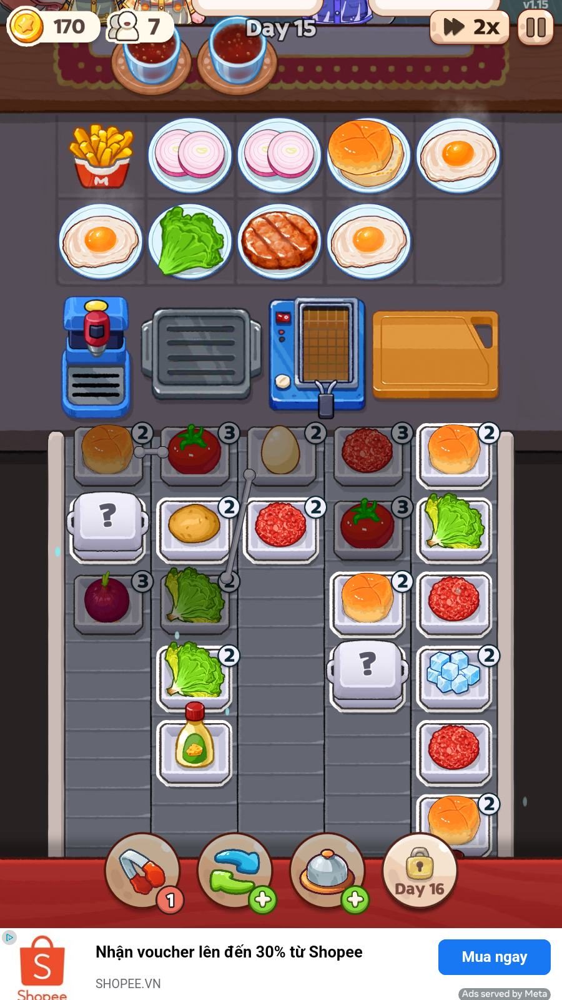
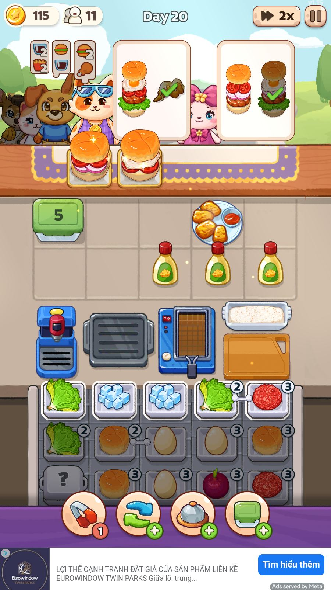
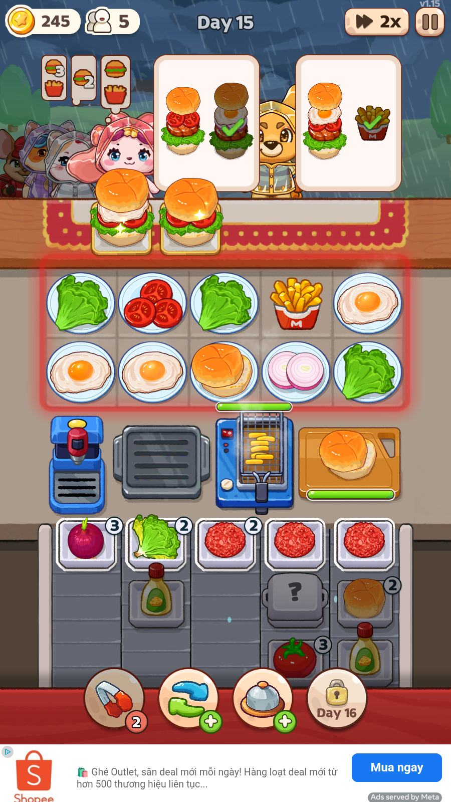
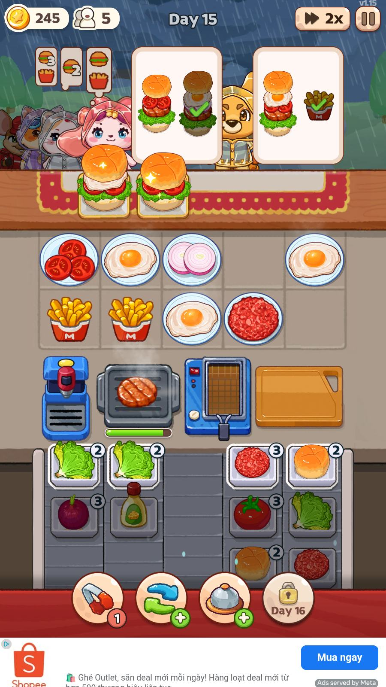
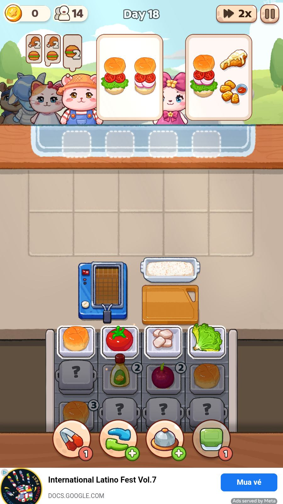

Lưới nguyên liệu và hàng đợi
Mô tả
- Có hai khu nguyên liệu. Băng (3 đến 5 cột, nhìn thấy 3 hàng) là nơi người chơi chạm; lưới chuẩn bị 5×2 = 10 ô là nơi nguyên liệu và món đã nấu chờ lên quầy.
- Chỉ ô ở hàng đầu mới chạm được. Chạm một ô lấy cả bó xN, các ô sau trượt lên, cột cạn thì để trống (không bù từ cột khác).
- Mỗi nguyên liệu lấy ra phải có "nhà" (dụng cụ, quầy hoặc ô lưới), nếu không lần chạm bị từ chối. Đây là cơ chế tạo áp lực chỗ chứa.
- Các vật cản (Hidden, Linked, Combined, Freeze, Key, ColorLock, OrderLock, Blocked) được cấu hình trong dữ liệu level và mở dần theo map.
- Lưới đầy là nguồn thua chính (Out of Slots). Playtest Day 15 ghi nhận một ca tưởng kẹt: lưới 10/10 không hiện popup vì code vẫn thấy một nước đi (patty lẻ ở hàng đầu) mà người chơi không thử (UC-10).
Thiết kế chi tiết
Tóm tắt thiết kế
- Code Chỉ hàng đầu chạm được; cột cạn để trống. Người chơi không thể tự do chọn nguyên liệu, nên mọi level đều là bài toán thứ tự.
- APK Lưới chuẩn bị luôn 5×2 ở mọi level; độ khó đến từ băng (3 đến 5 cột, Hidden, Linked, Combined, Freeze) và vật cản lưới (Key, ColorLock, OrderLock, Blocked).
- Code Mỗi lần chạm phải đủ nhà cho mọi bản sao nếu không bị từ chối ("no-room", "no-room grid-full"); đây là cơ chế biến lưới đầy thành thua.
- Playtest Cặp Linked cần cả cặp đứng hàng đầu và đủ ô trống; Day 15 lưới 9/10 làm cặp không thể lấy.
- Nhận định Ca Day 15 là tưởng kẹt, không phải khoá vòng: code còn thấy nước đi (patty lẻ) nên không bật Out of Slots, nhưng không có gợi ý vì có 2 ô đi được, còn chạm patty x2 bị từ chối mà không có chữ giải thích. Nên làm nổi mọi ô đi được khi lưới đầy và báo "cần N chỗ" khi từ chối bó.
- Code Khác 1.11: Magnet (6 hàng), Stack Box (hộp 5 ô, mở Day 16) và
GridPreMergeService(lắp món trên lưới cho dimsum, pizza).
Luồng người chơi từng bước
- Nhìn băngNgười chơi PlaytestBăng 3 đến 5 cột, hàng đầu có viền sáng; ô "?" là Hidden.

Day 15 Super Hard: băng 5 cột, nhiều ô "?" ở hàng sau, lưới 5×2 trống - Chạm hàng đầuNgười chơi Code
TryTapkiểm tra chỗ cho cả bó rồi mới lấy. - Cặp LinkedNgười chơi PlaytestChạm cặp nối dây: lấy cùng lúc nếu đủ ô.

Day 14: chạm bun nối dây với hành, cả hai được lấy cùng lúc 
Lưới 9/10: chạm cặp Linked không phản hồi vì cần đủ 2 ô trống - Lưới đầy dầnHệ thống PlaytestCòn ≤ 2 ô thì viền đỏ nháy.

Viền đỏ nháy khi lưới còn ≤ 2 ô trống 
Lưới 10/10 đầy: chưa thua cho tới khi người chơi chạm tiếp - Dùng boosterNgười chơi PlaytestMagnet chọn ô sâu; Stack Box gom 5 ô thành hộp.

Magnet: camera hạ xuống, mọi ô trong 6 hàng có viền sáng và chạm được 
Day 20: Stack Box gom 5 đĩa thành hộp xanh số 5 chiếm 1 ô - Thua hoặc chờ nước điHệ thống PlaytestPopup Out of Slots khi hết nước đi; còn nước đi thì chỉ nháy viền đỏ, không popup (Day 15 lần 3).Xem UC-10 về chuỗi điều kiện trong code.

Day 15 lần 3: lưới 10/10, nồi chiên và thớt đã xong và chờ ô, không popup; patty x2 bị từ chối nhưng patty lẻ cột 4, 5 vẫn đi được


Vật cản băng và lưới theo map (level đầu tiên có)
| Map | Hidden | Linked | Combined | Freeze | Key / ColorLock | OrderLock | Blocked |
|---|---|---|---|---|---|---|---|
| burger | 8 | 14 | 34 | 34 | 41 | 26 | 47 |
| coffee | 5 | 3 | 8 | 23 | 13 | 17 | 44 |
| sushi | 3 | 4 | 10 | 8 | 10 | 5 | - |
| pasta | 3 | 4 | 4 | 17 | 4 | 10 | 30 |
| icecream | 4 | 7 | 10 | 4 | 11 | 4 | - |
| sandwich | 7 | 1 | 7 | 4 | 12 | 4 | 11 |
| tteokbokki | 4 | 4 | 7 | 5 | 14 | 4 | - |
| seafood | 4 | 4 | 9 | 2 | 7 | 10 | 26 |
| dimsum | 7 | 8 | 9 | 4 | 5 | 10 | - |
| pizza | 2 | 4 | 13 | 3 | 7 | 4 | 18 |
| bento | 7 | 6 | 13 | 8 | 10 | 4 | - |
Nguồn: Data/levels/_stats.json (APK); số là chỉ số level (Day). Đánh dấu "-" nghĩa là map không dùng cơ chế đó.
Số cột băng theo level (toàn bộ dữ liệu)
| Số cột | Số level |
|---|---|
| 1 | 70 |
| 3 | 95 |
| 4 | 474 |
| 5 | 461 |
70 level 1 cột khớp với 70 level bento chưa chơi được trên APK (bento chỉ 30 màn chơi được); đây là suy luận (Nhận định).
Lý do từ chối chạm (chuỗi trong `ConveyorPickup.TryTap`)
| Chuỗi | Nghĩa |
|---|---|
| blocked | Không qua Allows (hàng sâu, khoá chạm, popup) |
| frozen | Ô còn cooldown (đóng băng) |
| chain | Chuỗi Linked chưa sẵn sàng |
| no-room | Không đủ nhà cho các bản sao |
| no-room grid-full | Như trên và lưới đang đầy |
Vận dụng cho game khác
- Một hàng chạm được + các hàng sâu nhìn thấy: người chơi biết hậu quả trước khi chạm, nên cảm giác thua là do mình.
- Từ chối chạm khi không đủ chỗ cho cả bó tránh trạng thái "lấy rồi mới thấy hết chỗ", nhưng cần bộ đếm Save-Me hoạt động đúng; nếu bộ đếm phụ thuộc vào trạng thái bận thì phải có đường thoát khi bận quá lâu.
- Cho mỗi cơ chế vật cản (Hidden, Linked, Freeze, Key) một level mở đầu riêng cho từng map để người chơi học từng cái một.
Bảng tổng hợp mọi tính năng đã làm chi tiết: FoodiePop_ThietKeChiTiet.xlsx.
Mở khóa & điểm vào
Có từ Day 1. Vật cản mở theo level đầu tiên của từng map (burger: Hidden Day 8, Linked Day 14, OrderLock Day 26, Combined và Freeze Day 34, ColorLock và Key Day 41, Blocked Day 47; số liệu Data/levels/_stats.json). Booster Magnet Day 3, Stack Box Day 16.
Điểm vào:
- Băng nguyên liệu ở nửa dưới màn (chạm trực tiếp)
- Booster Magnet (chọn ô bất kỳ trong 6 hàng) và Stack Box (gom 5 ô thành 1 hộp), xem Boosters
- Popup giới thiệu cơ chế mới (Linked, Combined, ô mới) trước level đầu tiên dùng chúng
Cách hoạt động
- Dữ liệu level cho hàng đợi: mỗi cột là danh sách ô
id[:số lượng]#trạng thái;StackModeService.BuildCellsFromQueueđặt phần tử đầu mỗi cột vào hàng trên cùng. IngredientSpawnerController.BuildColumnsdựng 3 đến 5 cột; cột đầu đầy lần đầu cách nhau 0,3 giây, nhả từng bước 0,1 giây.- Người chơi chạm ô hàng đầu:
ConveyorPickup.TryTaplấy cả bó (badge xN), kiểm tra chỗ (HasRoomFor) cho mọi bản sao. - Cột dồn lên một hàng (
ConveyorGrid.Advance); ô Hidden lộ khi nằm yên ở hàng đầu (RevealIfSettledAtFront). - Bản sao tới nhà: dụng cụ, quầy hoặc ô trong lưới 5×2 (
GridIngController). Cùng id thì chồng lên một ô tới giới hạn. - Khi lưới còn ≤ 2 ô trống:
GridIngController.TickFullAlertbật cảnh báo viền đỏ; khi đầy và không còn nước đi, sau 3 giây mở Save-Me Out of Slots. - Băng cạn mà còn đơn: sau 3 giây
TickDrainedRescuekéo món từ lưới về băng, tối đa 3 lần. - Hết nguyên liệu của cả hai khu và hết khách thì màn thắng (CoreLoop).
Ảnh chụp
Bấm ảnh để phóng to, dùng phím ← → để chuyển ảnh. Nhãn màu cho biết nguồn bằng chứng của ảnh.




Số liệu chính
| Chỉ số | Giá trị | Nguồn |
|---|---|---|
| Lưới chuẩn bị | 5×2 = 10 ô, ở 1.100/1.100 level | Data/levels grid |
| Sức chứa cột băng | 5 hàng (hiện 3) | stack_config.numSlots, gridHeight |
| Số cột băng | 3 / 4 / 5 cột: 95 / 474 / 461 level; 1 cột: 70 level | Data/levels queue.columns |
| Ngưỡng cảnh báo lưới | còn ≤ 2 ô, đợi 2 s, đếm 3 s | GridIngController (scene) |
| Cứu băng cạn | 3 s, tối đa 3 lần | GridIngController.DrainedRescueDelay |
| Stack Box | mở Day 16, giá 700, 5 ô một hộp | RC booster_config |
| Số level dùng vật cản | Hidden 425, Linked 472, Freeze 323, OrderLock 280, Combined 228, Key/ColorLock 161, Blocked 30 | Data/levels/_stats.json |
Use case (12)
Bấm vào từng use case để mở. Mở/đóng tất cả
UC-01 Chạm ô hàng đầu và lấy cả bó
Các bướcConveyorPickup.Allowskiểm tra khoá chạm và hàng đầuCanPickChainkiểm tra chuỗi LinkedTapReleaselấy bó vàCollectBatchgom các bản saoSpawnOnetạo từng bản sao bay tới nhà
| Actor | Player |
|---|---|
| Trigger | Chạm ô ở hàng 0 của cột |
| Điều kiện | Ô không bị đóng băng, không khoá, chuỗi Linked đã sẵn sàng, đủ nhà cho mọi bản sao |
| Kết quả | Badge xN là số bản sao; ví dụ ô "ice ×2" cho 2 viên đá |
| Quy tắc / số liệu | Chỉ hàng đầu chạm được; ô sâu hơn bị từ chối trừ khi dùng Magnet |
| Evidence | ConveyorPickup.TapRelease |
UC-02 Cột dồn lên và cột cạn để trống
Các bướcConveyorGrid.Advancedồn cột lên một hàng- Phần ở hàng chờ (pending) vào từ dưới khi có chỗ
- Cột cạn thì để trống, không kéo từ cột khác
| Actor | System |
|---|---|
| Trigger | Sau khi lấy một ô |
| Điều kiện | Còn ô phía sau trong cột |
| Kết quả | Playtest Day 15: cột 3 lấy hết thì để trống và không dồn |
| Quy tắc / số liệu | Sức chứa cột = stack_config.numSlots 5 hàng, màn hình hiện 3 hàng |
| Evidence | ConveyorGrid.Advance |
UC-03 Ô Hidden lộ ra
Các bước- Vẽ hộp sắt dấu "?"
ConveyorGrid.RevealIfSettledAtFrontlộ nguyên liệu khi tới hàng đầu
| Actor | System |
|---|---|
| Trigger | Ô "?" nằm yên ở hàng đầu |
| Điều kiện | Level có trạng thái #2 ở hàng đợi |
| Kết quả | Ô đã lộ giữ lộ kể cả khi bị đảo xuống |
| Quy tắc / số liệu | 425 level trong dữ liệu có Hidden; Day 15 và Day 18 burger thấy nhiều ô "?" ở hàng sau |
| Evidence | ConveyorGrid.RevealIfSettledAtFront |
UC-04 Cặp Linked (nối dây)
Các bướcConveyorPickup.CanPickChainvàIsLinkFreekiểm tra- Thiếu chỗ hoặc chưa sẵn sàng thì
RejectChainlàm cả chuỗi rung - Đủ thì lấy cả chuỗi trong một batch
| Actor | Player |
|---|---|
| Trigger | Chạm một ô trong chuỗi Linked |
| Điều kiện | Mọi ô của chuỗi đã ở hàng đầu và lưới đủ ô cho cả chuỗi |
| Kết quả | Playtest Day 14: bun và hành được lấy cùng lúc; cup và thịt băm đi hai hướng khác nhau (soda, vỉ nướng) |
| Quy tắc / số liệu | 472 level có Linked; Day 15 lưới 9/10 chạm cặp bun và cà chua không phản hồi vì cần 2 ô trống. Popup: "Pick linked slots together once every linked slot reaches the front." |
| Evidence | ConveyorPickup.RejectChain |
UC-05 Ô Combined (bó nhiều ô)
Các bướcStackModeService.ApplySlotGroupsvàMergeBlockgộp các ô thành một bó rộng × cao- Chạm lấy cả bó một lần
| Actor | Player |
|---|---|
| Trigger | Chạm bó Combined |
| Điều kiện | Level có nhóm $A ở hàng đợi |
| Kết quả | Một bó chiếm nhiều ô vuông trên băng |
| Quy tắc / số liệu | 228 level; burger bắt đầu từ Day 34. Nhóm không thành hình chữ nhật đặc bị bỏ (đọc từ 1.11, chưa kiểm lại) |
| Evidence | StackModeService.MergeBlock |
UC-06 Ô đóng băng (queue Freeze)
Các bướcConveyorPickup.TryTapthấy_cooldownlớn hơn 0 và gọiPlayRejectBump- Mỗi lần lấy ô ở cột kề làm tan một lượt (
ConveyorFreeze)
| Actor | System |
|---|---|
| Trigger | Chạm ô còn cooldown |
| Điều kiện | Level có #1:n |
| Kết quả | Ô tan băng sau n lượt (mặc định 3 theo 1.11) |
| Quy tắc / số liệu | 323 level; burger từ Day 34. Chưa gặp trong playtest Day 13–20 |
| Evidence | ConveyorPickup.TryTap |
UC-07 Chìa khoá và ô ColorLock, OrderLock, Blocked
Các bước- Lấy ô có chìa thì chìa bay tới ô ColorLock cùng màu (
GridIngController.UnlockColorWithKey) - OrderLock mở sau n lần phục vụ; Blocked khoá vĩnh viễn
GridIngController.get_LockedCellCountcho biết số ô bị khoá
| Actor | System |
|---|---|
| Trigger | Lấy ô mang chìa hoặc phục vụ khách |
| Điều kiện | Level có vật cản ở lưới chuẩn bị |
| Kết quả | Số ô dùng được trong lưới 10 ô giảm cho tới khi mở khoá |
| Quy tắc / số liệu | ColorLock và Key 161 level; OrderLock 280; Blocked 30. Dữ liệu grid.cells ghi từng ô |
| Evidence | GridIngController.UnlockColorWithKey |
UC-08 Magnet: chọn ô bất kỳ
Các bướcIngredientSpawnerController.BeginPickAnyIngredienthạ camerapickAnyCameraDrop3 trong 0,35 giâyConveyorPickup.IsWithinPickAnyRowscho phép chạm ô trong 6 hàng đầu- Người chơi chọn một ô; cột khép lại
| Actor | Player |
|---|---|
| Trigger | Bấm booster Magnet (kẹp đỏ) |
| Điều kiện | Còn lượt, có ô lấy được |
| Kết quả | Playtest Day 15: hiện cả 5 cột, mọi ô có viền trắng và chạm được; lưới đầy thì bấm Magnet không có hiệu ứng và không trừ lượt |
| Quy tắc / số liệu | Scene pickAnyRows 6 (RC booster_ingredient_pick ghi visibleRows 7, hai số khác nhau) |
| Evidence | IngredientSpawnerController.BeginPickAnyIngredient |
UC-09 Stack Box gom ô lưới
Các bướcGridIngController.BoxCellsvàTryStackLeftCellschọn ô đầySpawnStackBoxtạo hộp xanh chiếm 1 ô, ghi số phần bên trong- Hộp nhả từng phần khi cần (
ReleaseStackBox)
| Actor | Player |
|---|---|
| Trigger | Bấm booster Stack Box |
| Điều kiện | Mở từ Day 16; có ít nhất StackBoxMinItems 2 ô đầy |
| Kết quả | Playtest Day 20: 5 đĩa (2 cola, bun, 2 cà chua) gom thành hộp số "5" chiếm 1 ô, lưới còn 5/10 |
| Quy tắc / số liệu | RC booster_stack_box;1;16;0;700;99;num;5: mở Day 16, giá 700, num 5. Day 16 tặng 2 lượt kèm tutorial |
| Evidence | GridIngController.BoxCells |
UC-10 Lưới đầy không có popup vì còn nước đi (Day 15)
Các bước- Lưới đầy, viền đỏ nháy; nồi chiên và thớt đã nấu xong, giữ kết quả chờ ô; vỉ nướng trống; 2 burger ở quầy thiếu patty
- Hàng đầu: hành x3, xà lách x2, patty x2, patty x1 (cột 4), patty x1 (cột 5); người chơi chạm patty x2 (2 lần), hành x3, Magnet và một ô trên lưới, đều bị từ chối; chưa chạm cột 4 hoặc 5
- Không popup Out of Slots; người chơi tưởng kẹt và thoát bằng Pause, Restart, Leave (mất 1 tim)
| Actor | System |
|---|---|
| Trigger | Lưới 10/10 nhưng còn ít nhất 1 ô hàng đầu có chỗ cho mọi bản sao của nó |
| Điều kiện | Playtest Day 15 lần 3, 245 coin, 5 khách còn lại |
| Kết quả | Màn vẫn chơi tiếp được: patty lẻ cột 4 hoặc 5 vào vỉ, patty chín lên burger trên quầy |
| Quy tắc / số liệu | Mỗi 0,4 s ConveyorStuckAlert.HasAnyMove hỏi ConveyorPickup.HasMoveFor cho từng ô hàng đầu (cần chỗ cho mọi bản sao và cho kết quả nấu). Còn nước đi thì TickFullAlert chỉ nháy viền đỏ, không đếm 2 s + 3 s và không chặn chạm. Patty x2 bị từ chối vì vỉ chỉ có 1 ô patty (scene FSBurger) và lưới đầy. Dụng cụ chờ ô không dừng bộ đếm (CookingStation.IsMidCook = đang làm và không chờ ô). Gợi ý nước đi (ConveyorStuckAlert.FindOnlyMove) chỉ bật khi đúng 1 ô đi được, ở đây có 2. Kết luận là Nhận định từ code + ảnh + actions.log; chi tiết Docs/research/day15-softlock.md |
| Evidence | ConveyorStuckAlert.HasAnyMove |
UC-11 Cứu băng cạn (drained rescue)
Các bướcTickDrainedRescueđợi 3 giây- Kéo món từ lưới về băng (
IngredientSpawnerController.RecallGridToQueue) - Tối đa 3 lần
| Actor | System |
|---|---|
| Trigger | Băng hết nguyên liệu mà còn đơn |
| Điều kiện | Không bận và không món lưới nào đi được |
| Kết quả | Tránh kẹt do thiếu nguyên liệu |
| Quy tắc / số liệu | DrainedRescueDelay 3, MaxDrainedRescues 3 (stub 1.15) |
| Evidence | GridIngController.TickDrainedRescue |
UC-12 Gom lưới vào túi (Save-Me)
Các bướcGridIngController.ApplySaveMeClearAndCollectgom mọi món lướiCollectToSaveMeBagRoutineđưa vào túi (SaveMeBagBoard)- Túi nhả lại sau
| Actor | Player |
|---|---|
| Trigger | Chọn "Move all ingredients into a bag?" ở popup Out of Slots |
| Điều kiện | Trả 900 gems hoặc xem quảng cáo |
| Kết quả | Lưới trống trở lại |
| Quy tắc / số liệu | Chi tiết ở SaveMe |
| Evidence | GridIngController.ApplySaveMeClearAndCollect |
Cấu hình (15)
Gộp mọi nguồn: const trong code, giá trị mặc định trong APK, storage key, AB test, cờ server.
| Nguồn | Key | Kiểu | Giá trị | Ý nghĩa | Nơi định nghĩa |
|---|---|---|---|---|---|
| scene FS | IngredientSpawnerController.gridHeight | int | 5 | Số hàng sức chứa của cột băng | FS<Map>.unity (11/11) |
| scene FS | IngredientSpawnerController.visibleRows | int | 0 (không mask; màn hình hiện 3 hàng) | Giới hạn hàng hiển thị | FS<Map>.unity |
| scene FS | IngredientSpawnerController.initialSpawnInterval / releaseStepInterval | float | 0,3 s / 0,1 s | Nhịp lấp cột lúc đầu | FS<Map>.unity |
| scene FS | IngredientSpawnerController.randomQueueColumns | vector | x 3, y 5 | Số cột ngẫu nhiên khi level không khai hàng đợi | FS<Map>.unity |
| scene FS | ConveyorPickup.pickAnyRows / pickAnyCameraDrop / pickAnyCameraDuration / pickAnyCameraEase | int / float | 6 / 3 / 0,35 s / 9 | Magnet | FS<Map>.unity |
| scene FS | GridIngController.alertWarnFreeCells / alertStartDelay / alertDuration / deadlockLoseDelay | int / float | 2 / 2 s / 3 s / 2 s | Cảnh báo lưới đầy và kẹt | FS<Map>.unity |
| code const | GridIngController.DrainedRescueDelay / MaxDrainedRescues | float / int | 3 s / 3 | Cứu băng cạn | stub 1.15 |
| code const | GridIngController.StackBoxMinItems | int | 2 | Số ô tối thiểu để gom hộp | stub 1.15 |
| code const | GridIngController.SpiderTimeout / SweepLandScale / FillCloseTimeout / SaveMeAfterAlertHide | float | 10 / 0,5 / 3 / 0,35 | Thời gian các hiệu ứng dọn lưới và gom túi | stub 1.15 |
| json default | stack_config | json | {"numSlots":5,"waitTimeScale":3} | Sức chứa cột 5 hàng | RC mặc định APK |
| json default | booster_config | list | ingredient_pick;1;3;0;600;99;visibleRows;7 | shift_up_row;1;9;0;500;99 | auto_cook;1;12;0;600;99;num;1 | stack_box;1;16;0;700;99;num;5 | clean_dirty;0;6;0;500;99;num;-1 | refill_wait_time;0;-1;0;0;99 | enable;mở Day;số miễn phí;giá gems;quảng cáo tối đa;tham số | RC mặc định APK |
| json default | mechanic_features | json | {"mergeTop":1,"upgradeTool":1,"dirtyPlate":1,"autoStack":1,"dirtyStack":5,"rawIng":0} | autoStack 1: cùng id chồng lên một ô | RC mặc định APK |
| asset | Level.grid (width × height) | int | 5 × 2 ở 1.100/1.100 level | Lưới chuẩn bị luôn 10 ô | Data/levels/*/L###.json |
| asset | Level.queue.columns | int | 3 cột 95 level; 4 cột 474; 5 cột 461 (tổng 1 030 level chơi được) | Số cột băng | Data/levels |
| asset | Số level có vật cản | int | Hidden 425, Linked 472, Combined 228, Freeze 323, Key và ColorLock 161, OrderLock 280, Blocked 30 | Mức độ dùng từng cơ chế (11 map, 1.100 file) | Data/levels/_stats.json |
Backend / server
| Command | Chiều | Mục đích |
|---|---|---|
map_config_<map>_lv_<i> (phần 1 lưới, phần 2 hàng đợi) | server→client | Chuỗi level đọc từ Remote Config; live 16/11 có lv_all_override_default, xem LevelDesign |
Giao diện (UI)
| Element | Class | Mục đích |
|---|---|---|
| Băng nguyên liệu 3 đến 5 cột | AnhPD.FoodOrder.IngredientSpawnerController | Hiển thị và nhận chạm |
| Lưới chuẩn bị 5×2 | AnhPD.FoodOrder.GridIngController | Ô chờ, viền đỏ cảnh báo |
| Viền cảnh báo lưới đầy | AnhPD.FoodOrder.IngGridFullAlert | Nháy đỏ khi còn ≤ 2 ô |
| Dây nối Linked | AnhPD.FoodOrder.ConveyorChainRopeView | Vẽ dây giữa các ô cùng chuỗi |
Storage keys
Khoá "đã xem popup giới thiệu" cho Linked, Combined, ô mới, lưới mới, nguyên liệu mới (tạo bởi `UIInLevelCakeOrder.GetKeyIsDoneIntroLinkedSlotMechanics` và các hàm cùng họ; chuỗi khoá chưa đọc)
Còn thiếu / chưa xác minh
- Quy tắc Freeze (mặc định 3 lượt, tan khi lấy ô cột kề), Combined (chỉ hình chữ nhật đặc) và OrderLock (mở sau n lần phục vụ) lấy từ phân tích 1.11; 1.15 chưa chơi tới level có chúng (burger Day 26 trở đi)
- Ca Day 15 không popup (UC-10): code, ảnh và
actions.logcho thấy còn nước đi (patty lẻ cột 4, 5); chưa có log trạng thái trong game để xác nhận trực tiếp (Docs/research/day15-softlock.md) - Số hàng Magnet chạm được: RC
visibleRows7 so với scenepickAnyRows6, chưa rõ số nào có hiệu lực - Ghi chú playtest "lưới 4×2 = 8 ô" ở Day 17 mâu thuẫn dữ liệu (mọi level 5×2); khả năng là 2 ô bị khoá hoặc nhìn nhầm, chưa kiểm
Tính năng liên quan
Vòng lặp phục vụ đơn Dụng cụ nấu theo map Đĩa, quầy và ô chứa Booster trong màn Cứu màn (Save Me) Định dạng level, độ khó & thống kê Ô ẩn (Hidden Item, token #2) Món liên kết (Linked Items, nhóm `$` thứ hai) Ô đóng băng (Frozen Item, token #1:n) Khoá màu và chìa (Lock & Key, Grid-ColorLock) Khối băng theo đơn (Ice Block, Grid-OrderLock)
Nguồn đã đọc
AnhPD.FoodOrder.ConveyorPickup.c, ConveyorGrid.c, IngredientSpawnerController.c, StackModeService.c, GridIngController.c, IngGridFullAlert.c_rip/.../FSBurger.unityData/levels/*/L###.json, Data/levels/_stats.jsonData/remote_config/frc_defaults_115.json_analysis/live/fp_20261116/RESULTS_LIVE.md (Day 13–20) và shots l15b_38, l15d_magnet, l20_stackbox_2F:/0_Phuc/Clone/Pop/Docs/decode/GAMEPLAY.md (H08 đến H27, gợi ý 1.11)